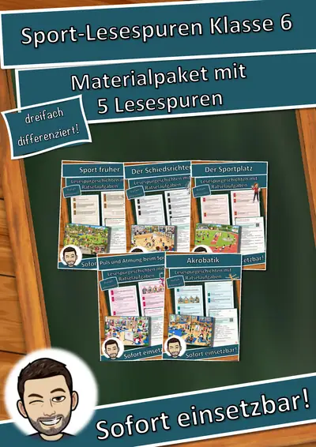
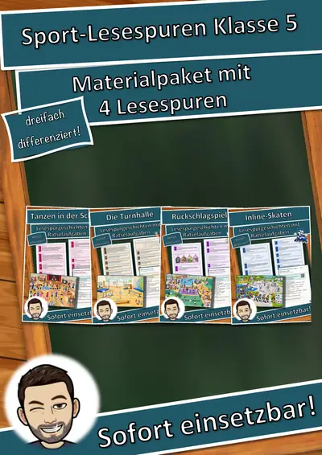
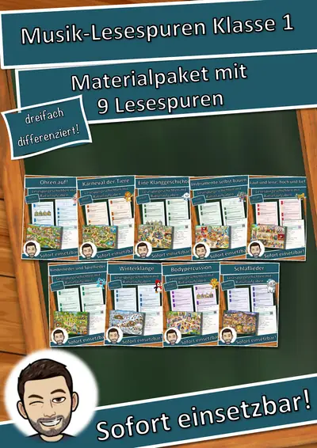
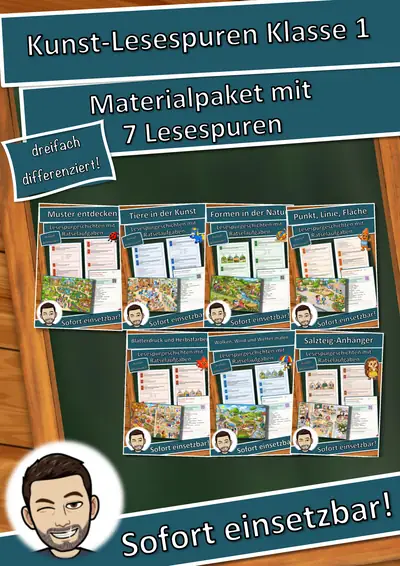

Materialpaket Lesespurgeschichten Sport Klasse 1: 9 Lesespuren mit Rätselaufgaben, dreifach differenziert
9 Lesespuren für die 1. Klasse – im Paket günstiger als einzeln
Mit diesem Materialpaket bekommst du 9 meiner Lesespurgeschichten für die 1. Klasse aus dem Fach Sport in einem Download. Alle Lesespuren sind sofort einsetzbar, dreifach differenziert (leicht ★ / mittel ★★ / schwer ★★★) und jeweils in Farbe und Schwarz-Weiß enthalten. So arbeitet deine ganze Klasse am selben Thema, und jedes Kind liest auf seinem Niveau.
Preisvorteil: Einzeln gekauft kosten die 9 Materialien regulär zusammen 35,91 €. Im Paket zahlst du nur 17,95 € und sparst damit rund 50 %.Die 9 Materialien im Paket
Kleine Spiele auf dem Pausenhof – fangen, hüpfen, mitmachen (Klasse 1 – Sport): Fiona und Kemal verbringen die große Pause – und probieren dabei alle Pausenspiele aus.
Fair spielen – gewinnen und verlieren lernen (Klasse 1 – Sport): Leni und Yusuf erleben, was faires Spielen bedeutet: An der Regeltafel erfahren sie, dass Regeln für alle gleich gelten, auf der Sackhüpfbahn starten alle gemeinsam, auf der Eierlaufstrecke wird nicht geschummelt.
Mein Sporttag – Abschluss-Sportfest mit Spielstationen (Klasse 1 – Sport): Am Stempeltisch gibt es die Stempelkarte – Punkte und Sieger gibt es heute nicht, es zählt nur das Mitmachen.
Fang- und Laufspiele – flitzen, ausweichen, abklatschen (Klasse 1 – Sport): Am Hütchentor lernen alle die Spielfeldgrenzen und die wichtigste Regel: nur sanft antippen, nie schubsen.
Gleichgewicht – balancieren, wackeln, sicher stehen (Klasse 1 – Sport): Auf der Storchenwiese stehen sie auf einem Bein, auf dem Baumstammweg balancieren sie mit ausgebreiteten Armen, über die Wackelbrücke geht immer nur einer.
Bewegungsbaustelle – bauen, klettern, rutschen, springen (Klasse 1 – Sport): Romy und Vincent bauen mit ihrer Klasse eine Bewegungsbaustelle – Vincent will überall hinaufklettern, Romy von ganz oben springen.
Bewegungslandschaft – ein Hindernisparcours aus Alltagsdingen (Klasse 1 – Sport): Doch Herr Okafor öffnet nur eine große Kiste – und heraus kommen Kartons, Reifen, Schwimmnudeln, Schnüre, Hütchen und alte Zeitungen.
Seilspringen – hüpfen, schwingen, im Takt springen (Klasse 1 – Sport): Mio und Pelle feiern einen Hüpf-Tag – und Pelle kann noch gar nicht Seilspringen.
Ballspiele – rollen, prellen, werfen, fangen (Klasse 1 – Sport): Luis und Greta machen eine Ballspiel-Rallye: An der Ballkiste entdecken sie große und kleine, harte und weiche Bälle – sogar einen Igelball.
Lehrplanbezug (LehrplanPLUS Bayern, Grundschule, Jahrgangsstufe 1)Deutsch – Lesen, mit Texten und weiteren Medien umgehen: Die Kinder lesen sinnentnehmend, wenden Lesestrategien an und entnehmen gezielt Informationen, denn nur wer genau liest, findet die nächste Station.
Deutsch – Sprechen und Zuhören: Das Hörverstehen per QR-Code schult konzentriertes Zuhören; Gespräche über Bräuche und Sachthemen fördern das Erzählen und Begründen.
Deutsch – Schreiben: Die Kinder beantworten Fragen schriftlich, füllen Steckbriefe aus und notieren Lösungen.
Sport: Kleine Spiele auf dem Pausenhof – fangen, hüpfen, mitmachen, Fair spielen – gewinnen und verlieren lernen, Mein Sporttag – Abschluss-Sportfest mit Spielstationen, Fang- und Laufspiele – flitzen, ausweichen, abklatschen, Gleichgewicht – balancieren, wackeln, sicher stehen, Bewegungsbaustelle – bauen, klettern, rutschen, springen, Bewegungslandschaft – ein Hindernisparcours aus Alltagsdingen, Seilspringen – hüpfen, schwingen, im Takt springen, Ballspiele – rollen, prellen, werfen, fangenSo funktioniert eine Lesespur
Die Kinder lesen ab START einen kurzen Abschnitt. Am Ende verrät ein Hinweis den nächsten Ort, den sie auf dem farbigen Plan suchen. Dort lesen sie weiter. An jeder richtigen Station sammeln sie einen Buchstaben, und eingeplante Sackgassen dienen der Selbstkontrolle. Am Ende ergeben die umgestellten Buchstaben ein geheimes Lösungswort.
Das ist in jeder Lesespur enthalten
Lesespurgeschichte in 3 Niveaus (leicht ★, mittel ★★, schwer ★★★)farbiger Plan als Suchkarte
Rätselaufgaben auf dem Weg, z. B. Zuordnen, Quiz, Rechenaufgabe und Steckbrief
Hörverstehen mit QR-Code zum Hörtext
Rätselseite mit Wörter-Suchsel und Wissensfragen
Ausmalbild zum Themaausführliches Lösungsblatt für die Lehrkraftalles zusätzlich als drucksparende Schwarz-Weiß-Variante
Insgesamt umfasst das Paket 453 Seiten.
Einsatzmöglichkeiten
Alle Materialien passen das ganze Schuljahr über, auch als Thema der Woche oder Werkstatt. Du kannst sie im Stationenlernen, in Freiarbeit und Wochenplan, in der Leseförderung und in Förderstunden einsetzen. In Vertretungsstunden funktionieren sie ohne Vorbereitung. Sie eignen sich für alle Schulen in allen Bundesländern.
Viel Freude mit deiner Klasse wünscht dir Snice!
Ähnliche Materialien

Materialpaket Lesespurgeschichten Sport Klasse 7: 7 Lesespuren mit Rätselaufgaben, dreifach differenziert

Materialpaket Lesespurgeschichten Sport Klasse 6: 5 Lesespuren mit Rätselaufgaben, dreifach differenziert

Materialpaket Lesespurgeschichten Sport Klasse 5: 4 Lesespuren mit Rätselaufgaben, dreifach differenziert

Materialpaket Lesespurgeschichten Sport Klasse 3: 9 Lesespuren mit Rätselaufgaben, dreifach differenziert

Materialpaket Lesespurgeschichten Musik Klasse 1: 9 Lesespuren mit Rätselaufgaben, dreifach differenziert

Materialpaket Lesespurgeschichten Kunst Klasse 1: 7 Lesespuren mit Rätselaufgaben, dreifach differenziert

Materialpaket Lesespurgeschichten Biologie Klasse 8 – Tiere: 35 Lesespuren mit Rätselaufgaben, dreifach differenziert